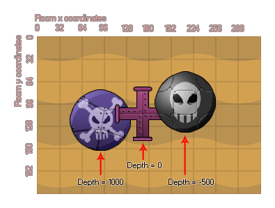

Defining Objects
Objects are the fundamental "building blocks" within GameMaker:Studio.
With the resources you have seen so far you can add some nice images and sounds to the game resource tree, but they don't do anything in the game itself yet! For that we need the most
important resource of GameMaker:Studio, the objects. Objects are a special resource that we use to control aspects of a game and to do specific things. Most of the time
they have a sprite associated with them so that you see them in the game rooms, but sometimes they are used as a "behind the scenes" controller to do things related to the user or for timing etc...
They can be given behaviors and they can react to certain events as well as to each other, and most of the things you see in a game are based on objects and their interactions. Now, I say
"based on" because you don't actually place objects directly into the game rooms, but rather you place instances of these objects which are basically copies (or clones if you prefer)
of the object resource. This is a very important thing to remember as instances and objects are not the same thing and each have their own set of functions that can affect them.
NOTE : If you are using the Free version of GameMaker:Studio you are limited to a maximum of 10 objects per game. For more details see
here.
Objects and Instances
In a game made with GameMaker:Studio, the characters, monsters, balls, walls, etc... are all instances copied from a basic object template that is found in the GameMaker resource tree
and then placed in a room. So when we talk about something affecting or changing an instance, we mean that one particular copy of an object in a room is being affected while all the rest are not, but
when we talk about affecting or changing an object we mean that anything we do to it will be reflected in all the instances created from that point on too. So, the object is the template for the instance,
and the instance is what we place in a room to make our game.
Creating an Object
To create an object in your game, choose Create Object from the Resources menu (or click the equivalent button on the toolbar) and the following window will open :

At first glance this may seem rather confusing, but the window is split into sections and we shall cover each one individually so you can get an overview of what they are for. Starting on the left,
there is some general information about the object, then in the middle there is the list of events (moments in time) for the object and the window to place the actions that are to be performed in
those events, and finally on the right there are the actions themselves which you can select for the object to perform, grouped under different tabs for ease of use. Events and actions will be discussed
in more detail in following sections of the manual. If you have "Uses Physics" selected then there will be another part visible in this window related to the physics options, but more on that later!
As you would expect, you can (and should always) give your object a name. This should never contain spaces nor unauthorised characters and should be short but memorable so that you can easily
identify resources later when you may have many of them, for example may people use a prefix or a suffix to identify the differences between resources, like "obj_Ship" or "shop_obj". Next you can
choose the sprite for the object should you wish it to have one. To this end, click with the left mouse button on the sprite box or the menu button next to it and a pop-up dialogue will appear with a list of
all the available sprites from the resource tree, then just select the one you want to use for the object. If you do not have an appropriate sprite yet, you can click the button New to create a new
sprite resource and edit it as you wish, just as if you had created the resource through the standard creation options, only now when you click okay, it will automatically be assigned to the object that you
had open when you started to create it. Once you select a resource there will be an additional Edit button here that you can use to change the sprite too. This can be faster than first finding the
resource in the list of resources and then indicating you want to edit it.
Below this there are many other options which are all outlined below :
Visible
Visible indicates whether instances of this object are visible when the room starts. Normally most instances are visible but sometimes it is useful to have invisible ones - for example, you can use them for
way-points to control a moving monster, or to keep track values and perform certain timed actions. Invisible objects will still react to events and if they have a sprite or a mask assigned to them, they will
also react should other instances collide with them... they just can't be seen and do not perform their draw event.
Solid
By checking solid you are indicating to GameMaker:Studio that it should consider instances of this object to be a solid object (like a wall). Collisions with instances of solid objects are treated differently
from collisions with non-solid objects and as such you are strongly advised to use Solid only for objects that are not moving.
Depth
You can set the Depth of the instances of an object, which basically controls whether they go below or above other objects at other depths. When instances are drawn on the screen they are drawn in
order of depth, with instances that have the highest depth being drawn first and instances with the lowest depth being drawn last. The following image illustrates this behaviour :#

It should be noted here that instances of the same depth that over-lap each other in the room editor (or in game) have no guaranteed priority over which one will be "on top" of the other and. If you want
to guarantee that an object lies on top of the others then you must give it a negative (or low) depth. Conversely If you want to make sure it lies below other instances then you have to give it a positive (high) depth.
Depth can also be changed in-game as it has its own variable that can be changed and manipulated by actions or in code.
Persistent objects
Below depth there is the option to make an object persistent. A persistent object is one that does not go away when the room is changed, but rather it "persists" and is carried over into the new room. It will only
disappear when you explicitly destroy it, either with a destroy action or in code. This means that if you place a persistent object in one room, it will still be available in all subsequent rooms and will continue to perform
any actions assigned to the events in its object properties. This is handy for when you have, for example, a main character that moves from room to room and you want to maintain the variables within that object the same,
but unless you take great care to create and destroy persistent objects correctly, you can easily get errors creeping into your project.
Parents
One of the most powerful options within the object properties is the ability to assign a parent. Every object in the game can have a parent object, but what does this mean? Well, when an object has a parent, it can share code,
actions and events with that parent. This is called "inheritance" and an object that has a parent is called a "child". But that's not all! You can also do checks and run code on parent objects which automatically include the child
objects too which saves a lot of time and energy. Another way to look at a parent object is as a way to "group" objects together under the same umbrella and have them share certain things without loosing their own identity.
For more information on parents (and other advanced object properties) see More About objects. Please note that you can click the Parent button
to automatically open the assigned parent object.
Masks
When an object has a sprite, it also has a mask. This is usually defined by the sprite itself (and can be changed in the sprite editor) but sometimes you may want an object to have a different shaped mask to its sprite, or even have no
sprite but still a mask. Why? Well, masks are what govern collisions in GameMaker. When two instances come together, GameMaker has to decide whether a collision has occurred and to do this it relies on the mask of the object,
either the one defined here or the one that is defined in the sprite properties. If you have no mask then you have no collision! It should also be noted that if you have assigned a sprite to the object and then assign a mask, GameMaker will
always base collisions off of the assigned mask and NOT the sprite. For example, if you make an isometric game, objects typically have a height (to give them a 3D view), but for collisions you only want to use the "feet" part of the sprite.
This can be achieved by creating a separate sprite and then assigning that to be used as the collision mask for the object. Please note that you can click the Mask button to automatically open the assigned mask
sprite.
Information
The button Show Information gives an overview of all information for the object that can also be printed out or saved as an html file. This is particularly useful when you want a loose overview of all your actions, code and events or if you
to debug something within the object.
Uses Physics
When you check this box you are telling GameMaker:Studio that this object should be part of a physics world. This will also open another part of the object window where you can define the physical properties of all
instances of this object. More information on this can be found in the Advanced Use section of the manual under More About objects.